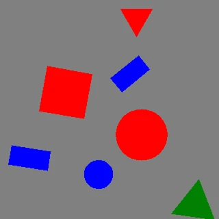
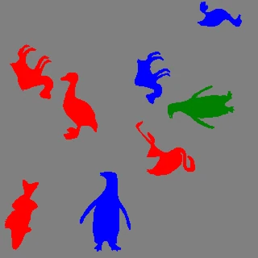

Tasks and keypoints¶
Tasks¶
Each task exposes a different annotation representation. In the looping previews below (yellow overlay), every generated image appears first bare, then with its exported annotation drawn back on. The clips share the same seeded sample stream, so the shapes line up one-for-one — only the label type differs.
Axis-aligned boxes.

Filled-shape polygons.

Oriented boxes, derived in each shape's own upright frame: the box is the shape's axis-aligned box in its pre-rotation pose, turned rigidly with the shape — its sides always run along and across the shape's own (symmetry) axis, the way a human annotator would draw it, rather than the minimum-area rectangle, which for shapes like kite or arrow would lean off the shape's axis.
Animal silhouettes with the sixteen landmark points and skeleton edges.

Regenerate these clips with python examples/animate_synthetic_dataset.py.
Keypoints / pose¶
The keypoints task is available for three shape families, each with its own fixed, dataset-wide schema: the twelve animal silhouettes use a 16-point anatomical schema (below), the seven symbol shapes use a 7-point structural schema (see Symbol keypoint schema), and the twenty-six letter stroke figures use a 15-point grid schema (see Letter keypoint schema). A dataset carries exactly one — Ultralytics' YOLO pose format declares one kpt_shape and COCO one keypoints list per category, so shapes must belong entirely to one family under this task; mixing any two of them, or pairing a geometric shape with any of them, raises ValueError at SyntheticConfig construction.
A single set of animal names covers quadrupeds, birds, and swimmers, because the front_limb_* pair is whatever the animal actually has at that slot (paws, wings, or fins/flippers). left is the limb nearer the viewer, right the far one — a documented convention, since a side profile cannot truly tell left from right. Because the far point sits only slightly offset from the near one (0.8–4.1px apart at shipped instance-size defaults), left/right-paired landmarks are visually indistinguishable at default rendering sizes — worth knowing before writing a custom evaluator or training on this data.
| Index | Name | Meaning |
|---|---|---|
| 1 | mouth |
Mouth — snout/beak/trunk tip |
| 2 | eye |
Eye landmark (hand-placed — a silhouette carries no eye) |
| 3 | ear |
Ear (tip where prominent, else the ear position on the head); optional, see below |
| 4 | head |
Skull centre |
| 5 | neck |
Middle of the neck, halfway between head and shoulders |
| 6 | body_top |
Shoulder/chest — the front-limb attachment region |
| 7 | body_bottom |
Hip/pelvis — the hind-limb attachment region |
| 8 | tail |
Tail tip |
| 9 | front_elbow_left |
Near front-limb bend: elbow, wing wrist, or flipper bend |
| 10 | front_elbow_right |
Far front-limb bend; overlaps the near one when not separately visible |
| 11 | front_limb_left |
Near front-limb tip: paw/hoof, wing tip, or fin/flipper tip |
| 12 | front_limb_right |
Far front limb; overlaps the near one when not separately visible |
| 13 | hind_knee_left |
Near hind knee/hock bend; optional, see below |
| 14 | hind_knee_right |
Far hind knee/hock bend; optional, see below |
| 15 | hind_limb_left |
Near hind-limb tip (foot/hoof); optional, see below |
| 16 | hind_limb_right |
Far hind limb; optional, see below |
The skeleton connects mouth–head, eye–head, ear–head, the head–neck–body_top–body_bottom–tail chain, a two-segment body_top–front_elbow–front_limb chain per front limb, and a two-segment body_bottom–hind_knee–hind_limb chain per hind leg — 15 edges over 16 nodes, so an absent ear drops exactly its one edge and an absent hind leg exactly its own two, orphaning nothing. Every limb is articulated in two points because a limb's bend is the most visible pose cue on a silhouette.
Visibility follows COCO: v=2 means the point is labeled and visible inside the canvas; v=0 means it is not labeled, either because it fell outside the canvas or because the animal does not have that landmark at all (see "Absent landmarks" below). A v=0 point's coordinates are zeroed. Partial occlusion is not modeled.
Every landmark is a pure rigid transform (translate/scale/rotate) of its packaged template position — zero articulation, zero intra-class deformation — so a model trained on this data learns template identity plus a similarity-transform regression, not articulated pose; the dataset exercises the COCO/YOLO pose formats end-to-end, it is not a substitute for articulated-pose training data.
Absent landmarks¶
ear and the four hind-leg points (hind_knee_*, hind_limb_*) are the only landmarks an animal may lack — a whale's silhouette shows pectoral flippers (its front limbs) but no hind legs, and neither a whale nor a fish has an external ear to annotate. The packaged table carries a (nan, nan) row for an absent landmark rather than a faked point, always paired with v=0; every writer branches on that visibility flag, not on the coordinates, so an absent landmark is emitted as the documented (0.0, 0.0, v=0) placeholder with no special-casing for NaN. fish and whale lack all five (11 of 16 landmarks present); the other ten animals have all 16.
An absent landmark and a canvas-clipped landmark both serialize identically as v=0 (matching COCO's own "not labeled" convention). A custom-eval author computing per-keypoint recall or OKS naively — treating every v=0 as a detector miss — will see a systematic bias on fish and whale, whose four hind-leg points are structurally absent rather than missed.
All 49 classes are still emitted as COCO categories, but the keypoint schema and skeleton are attached only to categories in the run's own keypoint family — for an animal run, the four geometric-shape categories carry no keypoints/skeleton fields, and neither would the seven symbol categories or the twenty-six letter categories if this were a symbol or letter run instead, since none of them has a matching landmark table to draw from. Each animal category stores one flat triple per point on each of its annotations:
{
"categories": [
{
"id": 5,
"name": "duck",
"keypoints": ["mouth", "eye", "ear", "head", "neck", "body_top", "body_bottom", "tail", "front_elbow_left", "front_elbow_right", "front_limb_left", "front_limb_right", "hind_knee_left", "hind_knee_right", "hind_limb_left", "hind_limb_right"],
"skeleton": [[1, 4], [2, 4], [3, 4], [4, 5], [5, 6], [6, 7], [7, 8], [6, 9], [6, 10], [9, 11], [10, 12], [7, 13], [7, 14], [13, 15], [14, 16]]
}
],
"annotations": [
{
"keypoints": [x1, y1, v1, "...", x16, y16, v16],
"num_keypoints": 16
}
]
}
num_keypoints counts only v>0 triples, so a whale's absent ear and hind legs drop it to 11.
YOLO pose labels extend the detection row with the same ordered triples, and data.yaml declares the shared shape plus its horizontal-flip mapping:
path: .
kpt_shape: [16, 3]
flip_idx: [0, 1, 2, 3, 4, 5, 6, 7, 8, 9, 10, 11, 12, 13, 14, 15]
names:
0: square
4: duck
flip_idx is the identity permutation on purpose: left/right are viewer-relative here — left is the limb nearer the viewer, not the animal's anatomical left — so mirroring a side profile never turns a near limb into a far one and no landmark changes index under a horizontal flip.
Each pose row is cls cx cy w h x1 y1 v1 ... x16 y16 v16 — 53 tokens, fixed-width even for a whale whose absent hind legs still emit their zeroed 0.000000 0.000000 0 triples. Each animal ships as an editable SVG asset under fuse_augmentations/data/zoo/<animal>.svg, carrying its outline, its keypoints (with a visible skeleton overlay), and its CC0/Public Domain Mark provenance as zoo:-namespaced attributes; the placement rules and hand-editing instructions live in fuse_augmentations/data/zoo/README.md.
Symbol keypoint schema¶
The seven symbol shapes share a different, smaller schema: seven generic structural slots rather than sixteen anatomical ones. Where the animals could share names because of anatomical homology (every quadruped has a body_top), the symbols have no equivalent shared vocabulary — a "flank" means a kite's side corner on one shape and an arrow's barb on another — so the names describe structural role instead, and only center is guaranteed present.
| Index | Name | Meaning |
|---|---|---|
| 1 | center |
The outline's own area centroid (center of mass) — mandatory |
| 2 | apex |
The distinctive distal point (optional) |
| 3 | tail |
The point opposite apex along the main axis (optional) |
| 4 | flank_left |
Mirrored pair nearest the apex (optional) |
| 5 | flank_right |
Mirrored pair nearest the apex (optional) |
| 6 | base_left |
Mirrored pair at the far end (optional) |
| 7 | base_right |
Mirrored pair at the far end (optional) |
Point counts run 4–6 across the seven symbols, so — exactly like the animals' absent ear/hind-leg rows — an unused slot is a (nan, nan) row paired with v=0, never a faked point. center is each symbol's own area centroid (the shoelace-formula center of mass, computed from its raw outline) rather than a hand-picked point — for every symbol shipped here that centroid lands safely inside the outline, even the concave ones (arrow, cross, anchor), so there is no need to fall back to a hand-placed substitute; a future, more exotic concave outline whose true centroid falls outside its own silhouette would need one.
The skeleton is a star: six edges, each connecting center to one of the other six slots. Every optional slot is therefore a leaf, so an unused one drops exactly its own edge and orphans nothing — the same property the animal skeleton's ear/hind-leg leaves rely on.
Unlike the animals' identity flip_idx, the symbol schema's horizontal flip is a genuine, non-trivial permutation: flank_left (index 3, 0-based) swaps with flank_right (4), and base_left (5) swaps with base_right (6); center/apex/tail sit on the symmetry axis and map to themselves. This is correct precisely because every symbol is drawn mirror-symmetric about its own vertical axis in canonical orientation — a property a square or a plain plus-sign could not offer (4-fold symmetry gives a fixed landmark no stable identity), but two-fold mirror symmetry does, since the generator's random in-plane rotation preserves winding and so keeps left and right distinguishable at any angle.
Each symbol pose row is cls cx cy w h x1 y1 v1 ... x7 y7 v7 — 26 tokens, fixed-width even for a symbol using only 4 of the 7 slots. Each symbol ships as an editable SVG under fuse_augmentations/data/symbols/<symbol>.svg, in the same schema the animals use: one closed <path id="outline"> plus a <g id="keypoints"> of named circles. The two families store the same thing — an outline and the landmarks annotating it — so they now store it the same way, and examples/edit_shape_keypoints.py drags a symbol's landmarks exactly as it drags a duck's.
Letter keypoint schema¶
The twenty-six letters share a third, still smaller schema: fifteen generic grid slots — top_left, top_mid, top_right, upper_left, upper_mid, upper_right, mid_left, center, mid_right, lower_left, lower_mid, lower_right, bottom_left, bottom_mid, bottom_right — laid out as one shared 3-column x 5-row grid. Unlike the symbols, no slot is mandatory across every letter (v, for instance, never touches center); a letter uses whichever subset it needs, so point counts run from 3 (l, v) to 10 (b).
Unlike either other family, a letter's skeleton is not shared across the family: each letter's edges are exactly its own stroke graph — the same graph the outline is wrapped around — because that graph is what makes it that letter, not a cosmetic overlay on a silhouette every member shares. COCO's per-category skeleton and the animated-preview overlay both resolve this per letter rather than reading one dataset-wide tuple.
Unlike the animal and symbol landmarks, which need an inward inset to keep them off their own outline's boundary, a letter's keypoints need no correction at all: they are exactly the nodes the outline was wrapped around, and the wrap leaves every one of them half a stroke width inside the fill — including a stroke's free end, which sits at the center of its own round cap.
The horizontal-flip flip_idx swaps each row's left/right slot and holds the middle column fixed. Note that a mirrored letter is generally a different letter (or no letter at all), so a horizontal flip is not the label-preserving augmentation here that it is for an animal silhouette; the field is published for format completeness.
path: .
kpt_shape: [15, 3]
flip_idx: [2, 1, 0, 5, 4, 3, 8, 7, 6, 11, 10, 9, 14, 13, 12]
names:
0: a
23: x
Each letter pose row is cls cx cy w h x1 y1 v1 ... x15 y15 v15 — 50 tokens, fixed-width even for i, which uses only 3 of the 15 slots. Each letter ships as an editable SVG under fuse_augmentations/data/letters/<letter>.svg, but in a graph schema rather than an outline one: a <g id="nodes"> of named grid positions and a <g id="strokes"> of <line> edges (optionally curved by zoo:bulge, cut by zoo:cut). There is no outline in the file — the silhouette is generated by stroking that graph at load time, which is what keeps LETTER_STROKE_WIDTH and LETTER_COUNTER_GAP tunable after the fact and keeps a node a single draggable point instead of a consequence baked into a hundred outline vertices. examples/edit_shape_keypoints.py opens letters too, drawing the strokes themselves so dragging a node visibly reshapes the letter.